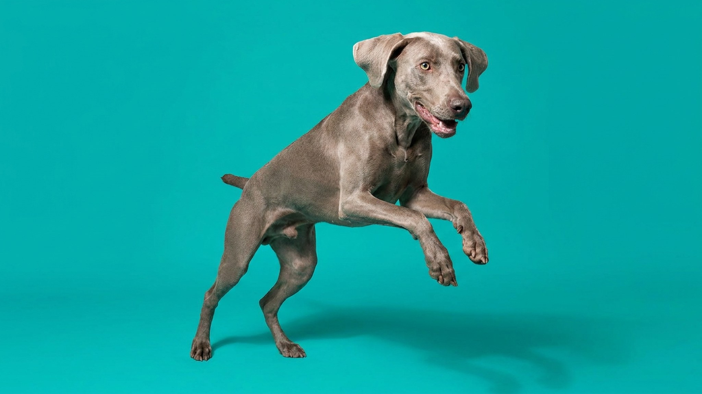

Веймаранер входит в квартиру — и сразу ищет хозяина взглядом. Уходит хозяин — собака идёт следом, ложится у двери, скулит. Через час без движения и общения она уже грызёт плинтус или переставляет мебель на собственное усмотрение. «Серебряный призрак» — красивое прозвище, но за ним стоит порода с запросами, которые легко недооценить при выборе щенка. Ниже — честный разбор: для кого веймаранер подходит и что нужно знать до покупки.
Веймаранер создавался как охотничья собака для целого дня в поле. Эта генетика никуда не делась. Взрослому веймаранеру нужно минимум 1,5–2 часа активной нагрузки в сутки — не шаг рядом с хозяином, а бег, поиск, апортировка, плавание.
Без достаточной нагрузки веймаранер становится разрушительным: жуёт вещи, лает, не может успокоиться вечером. Это не характер — это накопленная энергия.
🐾 Дневник здоровья питомца — в кармане
Вес, прививки, симптомы и напоминания в одном приложении. AnimaLife следит за здоровьем питомца вместо вас.
Веймаранера в кинологическом мире называют «velcro dog» — собака-липучка. Порода буквально создана работать в паре с человеком, и одиночество переносит тяжело.
Если ваш рабочий день 9–18 без возможности вернуться домой или нанять выгульщика — веймаранер не ваша порода.
Веймаранер умный, но своевольный. Он хорошо обучается — если обучение начато до 3–4 месяцев и ведётся методично.
Короткая шерсть веймаранера требует минимума: расчёска-рукавица раз в неделю, купание по необходимости. Уши осматривать регулярно — висячие, склонны к загрязнению. Когти стричь по мере отрастания.
Веймаранер не квартирная порода в стандартном смысле. Дом с выходом в огороженный двор — идеал. В городе реально, но только при условии 2-часовых активных прогулок ежедневно и гибкого графика хозяина.
Кому подойдёт: активным людям, охотникам, бегунам, велосипедистам; семьям с детьми старше 6 лет; тем, кто готов вложить время в воспитание и никогда не оставлять собаку одну надолго.
Кому не подойдёт: занятым людям с графиком 9–18, жителям маленьких квартир без активного досуга, тем, кто хочет «красивую собаку для фото» без готовности к ежедневной работе с ней.
🐾 Не уверены, что это опасно?
Опишите симптом в AnimaLife — AI-ветеринар за минуту подскажет, что в пределах нормы, а когда пора к врачу.
🐾 Понравился разбор?
Подпишитесь на канал — каждый день разбираем по одному тревожному симптому у кошек и собак: что в пределах нормы, а когда пора к врачу. Подпишитесь, чтобы не пропустить разбор, который может спасти здоровье вашего питомца.
Материал носит информационный характер и не заменяет очную консультацию ветеринара.